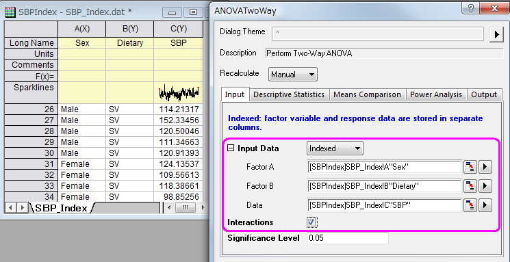
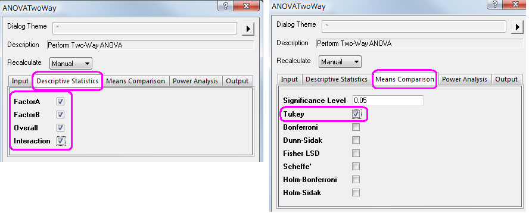
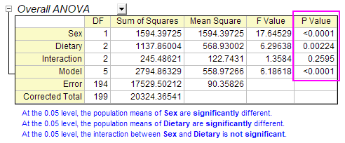
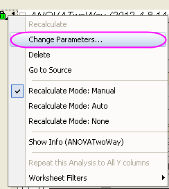
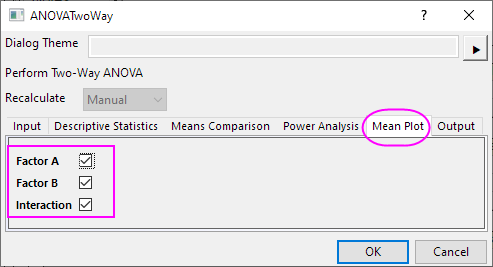
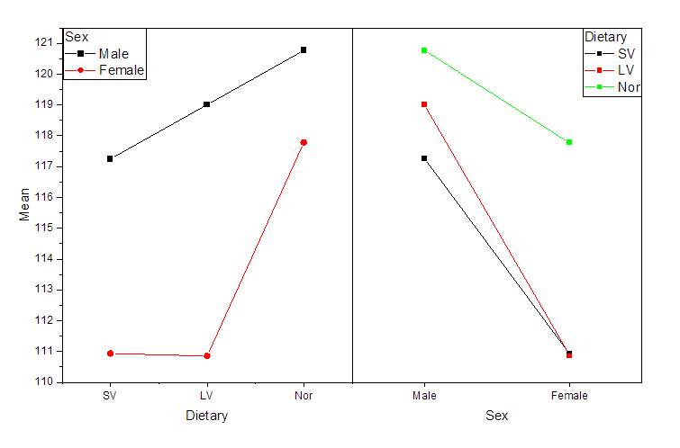
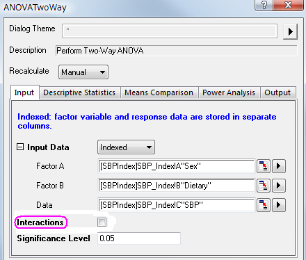
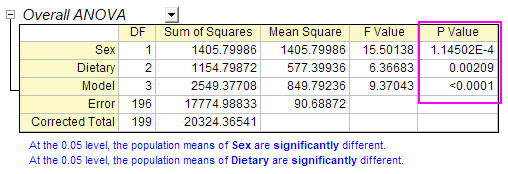
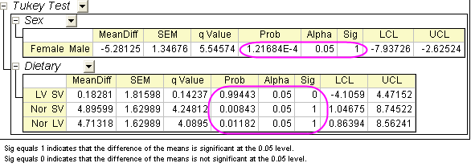
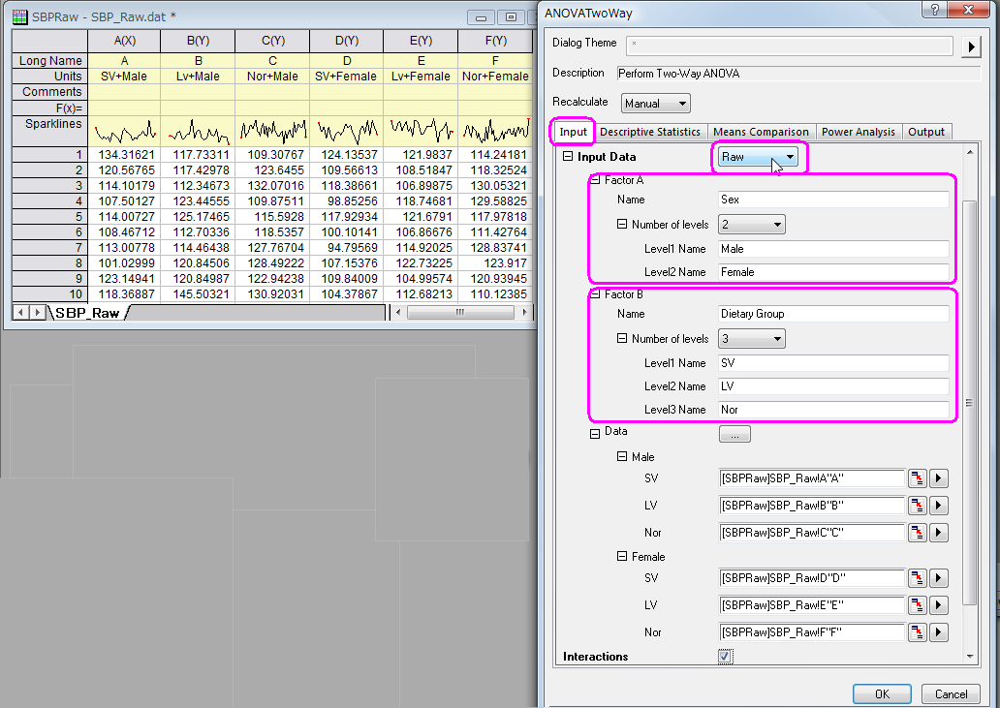

Zweifache ANOVA
TwoWayANOVA
Zusammenfassung
In einigen Fällen möchten Sie die Beziehung zwischen zwei Faktoren (kategoriale Variablen) und einer kontinuierlichen Ausgabevariablen untersuchen. Die Wirkung auf das Ergebnis bei Änderung eines der Faktoren kann von der Stufe des anderen Faktors abhängen. Aus diesem Grund müssen Sie die Wechselwirkungen zwischen zwei Faktoren näher betrachten. Die zweifache ANOVA ist eine geeignete Methode, um die Haupteffekte von und die Wechselwirkungen zwischen zwei Faktoren zu analysieren.
Origin-Version mind. erforderlich: Origin 2016 SR0
Was Sie lernen werden
Dieses Tutorial zeigt Ihnen, wie Sie:
- Zweifache ANOVA durchführen
- Ergebnisse einer zweifachen ANOVA interpretieren.
- das Wechselwirkungsdiagramm erstellen.
Schritte
Forscher sind an der Wirkung interessiert, die unterschiedliche Geschlechter- und Ernährungsgruppen auf den systolischen Blutdruck (SBP) haben. Der Faktor "Ernährungsgruppe" (dietary group) umfasst drei verschiedene Gruppen: strenge Vegetarier (SV), die keine tierischen Produkte jedweder Art essen, Laktovegetarier (LV), die Milchprodukte, aber keine anderen tierischen Produkte zu sich nehmen, und normale Esser (NOR), deren Ernährung einem amerikanischen Standard entspricht. Geschlechter- und Ernährungsgruppen können voneinander unabhängig sein oder miteinander in Wechselwirkung stehen. Ein Ansatz, dieses Problem zu lösen, besteht darin, ein Modell der zweifachen ANOVA zu erstellen, das die mittlere Stufe des systolischen Blutdrucks (SBP) vorhersagt.
Datenmodus Indiziert
Zweifache ANOVA durchführen
- Öffnen Sie eine neue Arbeitsmappe und importieren Sie die Datei \Samples\Statistics\SBP_Index.dat.
- Öffnen Sie den Dialog Zweifache ANOVA, indem Sie im Menü Statistik: ANOVA: Zweifache ANOVA wählen und dann auf der Registerkarte Eingabe den Modus der Eingabedaten auf Indiziert setzen.
- Wählen Sie auf der Registerkarte Eingabe die Spalte A, B und C als Faktor A, Faktor B bzw. Daten. Aktivieren Sie das Kontrollkästchen Wechselwirkungen.
- 
- Aktivieren Sie auf der Registerkarte Deskriptive Statistik alle Kontrollkästchen.
- Setzen Sie auf der Registerkarte Mittelwertevergleich das Signifikanzniveau auf 0,05 und aktivieren Sie das Kontrollkästchen neben Tukey, um diesen Test als Methode zum Mittelwertevergleich auszuwählen.
- 
- Klicken Sie auf OK, um die zweifache ANOVA durchzuführen.
Ergebnisse interpretieren
- 
In der Tabelle "ANOVA gesamt" im Ergebnisblatt der zweifachen ANOVA können Sie erkennen, dass Dietary (Ernährung) und Sex (Geschlecht) beides signifikante Faktoren sind, die Wechselwirkung zwischen ihnen jedoch nicht signifikant ist. Dies bedeutet, dass die Haupteffekte sowohl der Ernährungsgruppen als auch des Geschlechts signifikant sind, der Effekt auf das Ergebnis der Änderung in der Ernährung jedoch nicht von der Stufe Geschlecht abhängt.
Wechselwirkungsdiagramm erstellen
Um die Wechselwirkung weiter zu untersuchen, können Sie ein "Wechselwirkungsdiagramm" erstellen, indem Sie die folgenden Schritte befolgen.
- Klicken Sie auf das grüne Schloss im Ergebnisblatt ANOVA2Way1 und wählen Sie Parameter ändern, um den Dialog erneut zu öffnen.
- 
- Gehen Sie zum Mittelwertdiagramm und aktivieren Sie alle Kontrollkästchen.
- 
- Wir erhalten das Wechselwirkungsdiagramm.
- 
Neu berechnen
- Klicken Sie auf das grüne Schloss im Ergebnisblatt ANOVA2Way1 und wählen Sie Parameter ändern, um den Dialog erneut zu öffnen.
- Deaktivieren Sie in dem aufgerufenen Dialog auf der Registerkarte Eingabe das Kontrollkästchen Wechselwirkungen und klicken Sie auf die Schaltfläche OK.
- 
Es lässt sich feststellen, dass Dietary (Ernährung) und Sex (Geschlecht) signifikante Faktoren in der Tabelle "ANOVA gesamt" sind. Der Mittelwert von Nor ist signifikant größer als der von LV und SV für den Faktor Dietary. Der Mittelwert von Male ist signifikant größer als der von Female in der Tabelle "Dietary".
- 
- 
Modus Rohdaten
- Öffnen Sie eine neue Arbeitsmappe und importieren Sie die Datei \Samples\Statistics\SBP_Raw.dat.
- Markieren Sie alle Spalten und wählen Sie im Menü Statistik: ANOVA: Zweifache ANOVA, um den Dialog ANOVATwoWay zu öffnen. Wählen Sie auf der Registerkarte Eingabe die Option Roh als Modus der Eingabedaten.
- Setzen Sie auf der Registerkarte Eingabe die Anzahl der Stufen von Faktor A auf 2 und geben Sie Sex, Male und Female für Name, Stufe1Name bzw. Stufe2 Name im Zweig Faktor A ein.
- Setzen Sie außerdem auf der Registerkarte Eingabe die Anzahl der Stufen von Faktor B auf 3 und geben Sie Dietary Group, SV, LV und Nor für Name, Stufe1 Name, Stufe2 Name bzw. Stufe3 Name im Zweig Faktor A ein.
- 
- Setzen Sie auf der Registerkarte Mittelwertevergleich das Signifikanzniveau auf 0,05 und aktivieren Sie das Kontrollkästchen neben Tukey, um diesen Test als Methode zum Mittelwertevergleich zu verwenden.
- Klicken Sie auf OK, um die zweifache ANOVA durchzuführen.